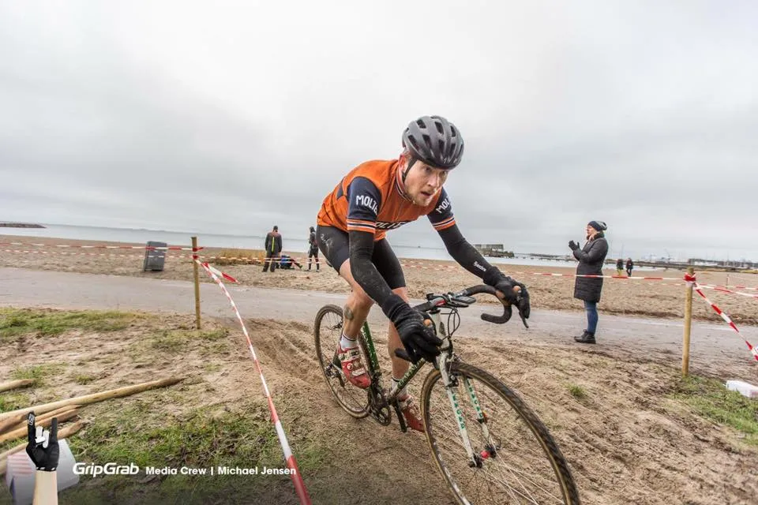
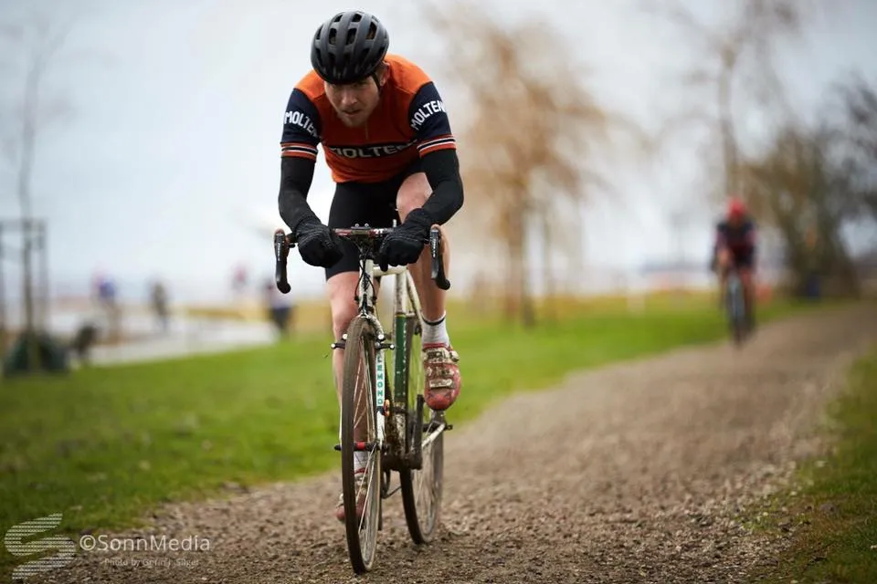
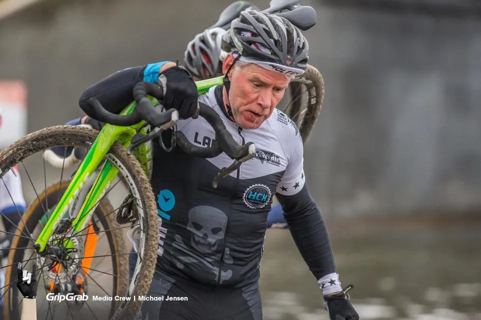

Copenhagen Cyclo Cross Grand Prix: Mudder og lånecykel

Der er ikke noget, der hedder vinterpause i Squadra Moltenis rytterkontrakter. I dag stod Mark Petersen og Jens Langergaard til start ved Copenhagen Cyclo Cross Grand Prix ved 5-øren på Amager.






Mark i motionsklassen iført sin nyleverede klubtrøje, mens Jens af hensyn til licensregler i H50 og for at vise flaget for den arrangerende klub, Hellerup Cykel Klub, hvor han også har medlemsskab, nøjedes med Molteni-kasket.
Ruten var en stort set Amager-flad tonser-rute, men til gengæld var der to løbestykker i sand, der trak tænder ud.
Jens fik defekt under opvarmningen men nåede at låne en anden cykel fra en venlig deltager fra foregående start. Det betød en noget kikset start, da boxen var fyldt da Jens nåede frem med lånt cykel 10 sekunder inden start.
Motionsklassen hvor Mark var tilmeldt, da han ikke har løst licens i år, var udover Mark besat med en række andre stærke navne og de lappede ret hurtigt H50-feltet. Mark kørte sig på trods af et par styrt ind på 8. pladsen i motion og Jens blev nummer 10 i H50. Sebastian Fini sejrede suverænt i A og B licensrækken